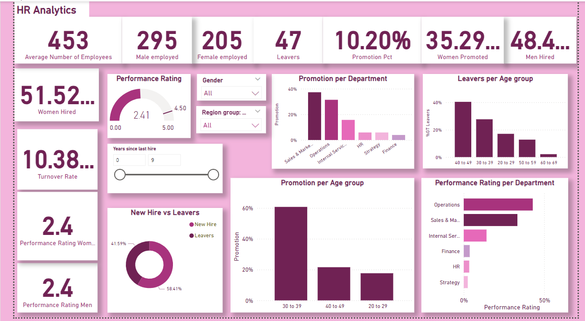

This dashboard visualizes customer survey data for a jewelry store, offering valuable insights into customer store brand awareness and jewelry preferences. By analyzing key trends in customer tastes, purchasing behavior, and brand perception, the dashboard helps the store identify what drives customer choices. Whether exploring popular jewelry types, preferred materials, or brand recognition, this tool enables data-driven decisions to enhance marketing strategies, improve customer experience, and tailor product offerings to meet customer desires.


This interactive dashboard provides a comprehensive analysis of the field activities conducted by a company's consultants during a certain Week. A total of 67 consultants were deployed across various countries to perform tasks related to health interventions and surveillance. The dashboard captures key performance metrics, including report submission status, activity participation, and site visits, offering insights into the operational efficiency and field performance of the consultants.

The Customer Churn Analysis Dashboard provides a detailed examination of factors influencing customer churn within a telecommunications company. The dashboard leverages data-driven insights to identify key drivers of customer attrition, enabling the company to develop targeted strategies to enhance customer retention. This analysis is critical for understanding why customers leave and what measures can be implemented to reduce churn rates.

This interactive Power BI dashboard provides a detailed examination of sales performance across various dimensions, including product categories, regions, sales channels, and time periods. This dashboard helps stakeholders understand key sales trends, identify top-performing products and regions, and uncover areas needing improvement. The insights derived from this dashboard empower decision-makers to drive revenue growth and refine sales strategies.

This HR analytics dashboard provides a comprehensive view of workforce dynamics, focusing on key areas such as Diversity & Inclusion, employee turnover, and overall employee demographics. This tool empowers organizations to gain actionable insights into their workforce, helping them identify trends, measure the effectiveness of inclusion initiatives, and make data-driven decisions to foster a more diverse and inclusive workplace. Explore how gender balance, employee retention, and workforce composition impact organizational health and drive strategic improvements.